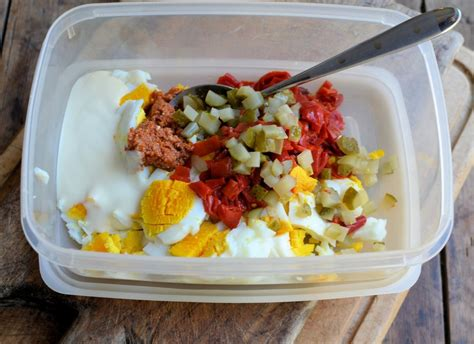

Mexican Egg Salad

This is a wonderful recipe that takes your
blue collar his is a wonderful recipe that takes your
blue collar egg salad and adds some Mexican flair!
Theres nothing better then the taste of the fluffy chopped
hardboiled eggs, creamy mayo, spices, bacon, and last but
definitly not least beef chorizo. All combined into one! this
recipe is perfect for when your craving some hearty
comfort food, but yet a little bit of an adventure for your taste
buds. This is a wonderful recipe!
Measurements & Ingredients
- 6 hardboiled Eggs (boiled for 12 minutes and peeled)
- 8 Fried Slices of Bacon (crispy)
- 1 Pound (raw weight) of Chorizo (cooked)(reserve
2 tbs. of grease)
- 2 Tbs. of Mayo
- 1 Pinch of Salt/Pepper
- 1 Tsp. of Red Pepper
- 2 tsp. of Dried Parsley
Steps
- Blend eggs in food processor until coursely
chopped
- Remove aggs from food processor
- Blend Bacon in food processor until coursely
chopped
- Combine all ingredients in a bowl and mix
by hand until completely incorporated
Enjoy!
t
now enjoy this wonderful recipe, add it
to a sandwich, a tortilla, or by itself